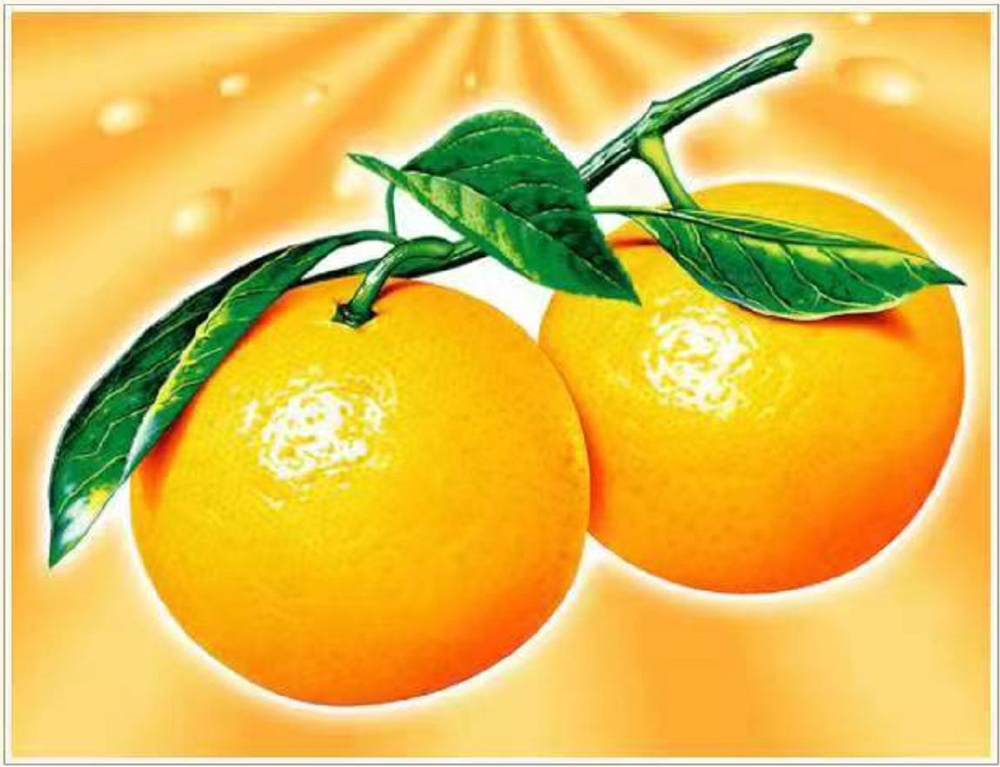

在中国,幼果、落果可千制作药用。耐贮运。成熟期差异大，可延长鲜果和加工原料的供应期。甜橙品种按果实成熟期有早、中、晚熟之分。
根据果实的形状和特点，可分为以下4个品种类群:@普通甜橙。果一股般为圆形，橙色，果顶无脐，或间有国印。是甜橙中数量最多的种类。②糖橙。又称无酸甜登，果形与苷通甜襁相似。因含酸量极低，果汁含量达到适当程度时即可采收。上市，是极早勤的甜橙品种。在地中海沿岸和巴西等地有少量生产，供应地方市场。⑧血橙。果内及果汁全呈紫红色或痛红色.果肉细嫩多汁，具特殊香味，地中海地区是其起源地和主产地。④脐橙。特征为果顶有脐，即有一个发育不全的小果实包埋于果实顶部。无核，内脆嫩，味浓甜略酸。
中国栽培的橙子品种相当多，主要有甜橙、雪柑、红汁橙(改良橙)、锦橙(鹅蛋柑)、叶橙、冰糖橙
济橙和要橙等。管理要点:
一、强肥地力，增强树势。幼树苗弱，根幼嫩，宜勘施德施，并及时松土除草，及时消灭奈草以节省养分。注意灌排水，保持适度确情，还要喷洒新高脂骥以保股水之放，切实促进时体的强壮。
二、整典树形，强化促果。在树冠四周枝叶密集处，修剪疏腾，顶部枝条重修越，内部枝条轻惨露，使树冠内部光照良好，结果多而品质好。在其刀奥伤口处及时涂珠愈伤防瘸膜，促进伤口愈合，防止病菌侵袭感染。要分别在花雷期、幼果期和果实膨大期，哇施壮果蒂灵，增组果蒂。加大营荞输送量，防落花、提高授扮能力，提高坐果率，加快膨大速度，确保果品优质高产。
三、促花分化，均衡果率。树体挂果的大小年使得树体承载失去平衡,既影响均衡收益,也影响果园树体健康。要在每年的花芽分化期环刷促花王2号一次,可促花芽分化,抑夏梢狂长,
可强花并提高授粉能力和坐果率:在秋末再环刷促花王2号一次,即可抑冬梢抽发,强化树势营养代谢
为来年开花结果打好基础。
四、防治病虫害，保护树体安全越冬。危害橙子树的病虫害较多，常见的有螨类、蚣美.潜叶蛾类、炭疽病等，防治上应根据各种病虫的发生特点，结合膜药防治。同问竣坡能新高腥骥措强药效。